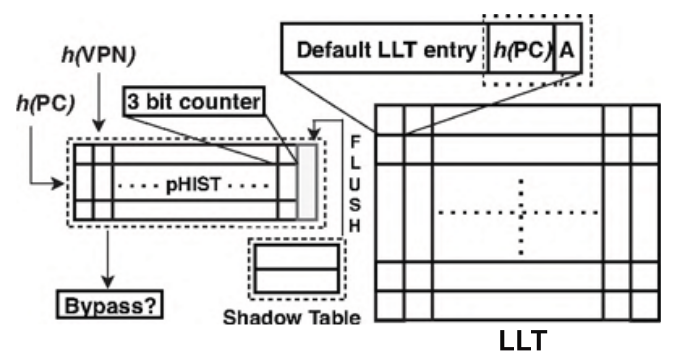
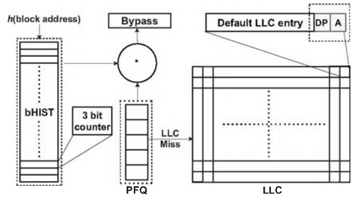

Dead Page and Dead Block Predictors: Cleaning TLBs and Caches Together
HPCA 2021
Chandrashis Mazumdar, Prachatos Mitra,
Arkaprava Basu
IISc
Problem
Dead Blocks in LLC
Dead Block: cache block that has high dead time
Dead time: Time between last access and eviction
Dead block prediction in LLC is an active area
Dead block bypass (avoid loading in the Cache)
Creates space for other useful blocks
Enables prefetching of blocks
Dead pages
Dead pages: Dead entries in TLB
The authors quantify the presence of dead pages in LLT
82% of LLT entries can be dead pages (on average)
86% of dead pages are Dead On Arrival (DOA)
Challenge: TLBs are small (~11.75KB), so predictors should be smaller
Opportunities
They observe: 73% Dead blocks are often concentrated in DOA pages
Utilize dead page information to predict dead blocks
Solution
Propose two predictors
Dead page predictor: dpPred
Correlating Dead block predictor: cbPred
Dead page predictor: dpPred
Adds Hash of PC (that brought the page) to LLT entries
Uses a 2D table of 3 bit saturating counters
Uses hash of PC (6 bits) and hash of VPN (4 bit) to index
Reduces storage overhead
Also has a shadow table (acts like a Victim cache)
Used for negative feedback (wrong prediciton)
Uses TLB accessed bits to identify DOA entries
dpPred

Correlating Dead block predictor: cbPred
Adds DP (Dead Page) bit, accessed bit to cache block metadata
PFN filter queue (PFQ) stores Physical Address of recent DOA pages
Block history table to store confidence value
cbPred

Evaluation
Using Sniper x86 simulator
On 14 memory intensive workloads
Compare with existing Dead Block predictor SHiP
When both predictors are used together
11 KB storage overhead
IPC speedup of 8.3% on average
LLT and LLC MPKI reduced by 9.65% and 4.24%